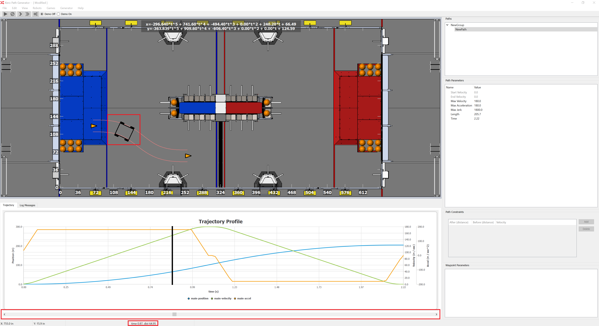

Cursor

The cursor and scrollbar are used to identify locations along a path. This is
especially useful for finding specific distances along the path for distance
constraints. There are three areas of note highlighted in the picture above.
First, on the path in the Path Editing window the robot current position is
highlighted with a simple robot image. The scroll bar along the bottom is used
to move the robot cursor along the path. Grab and move the scroll bar to see
the robot cursor move. Finally, in the status bar, the current time and
distance for the path is displayed.